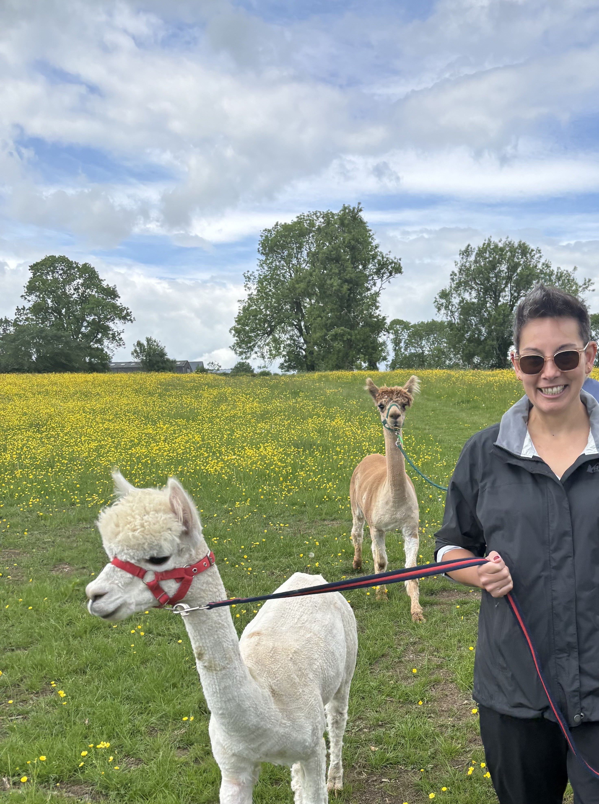
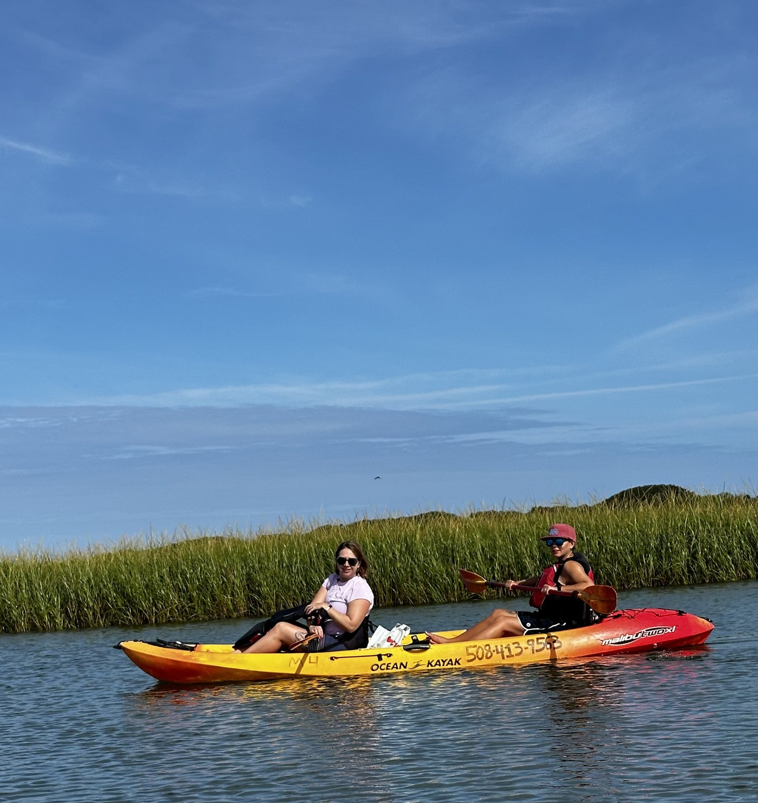
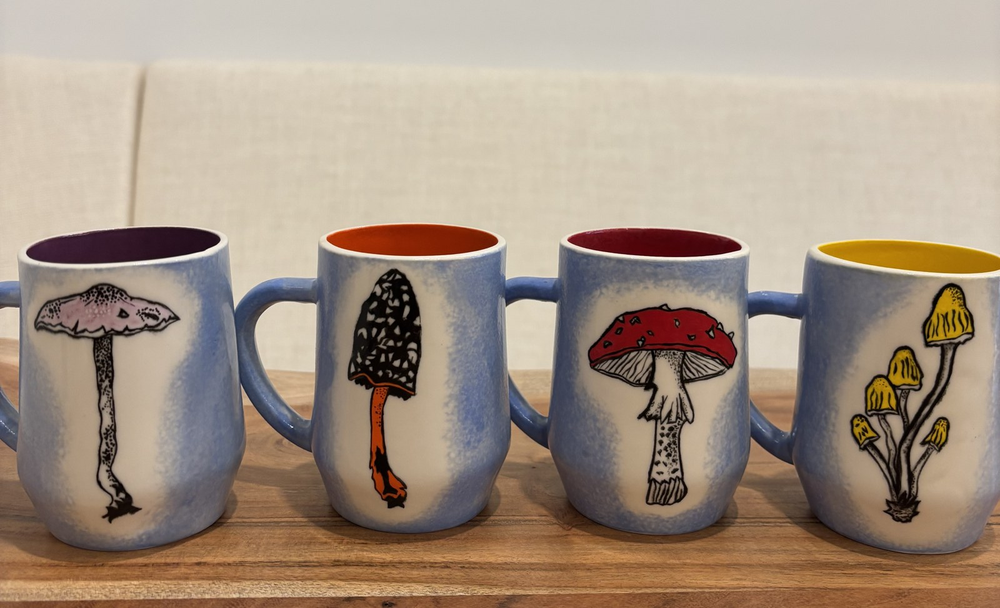

alex, in her natural habitat
ALEX PADILLA
Salesforce Advanced Admin // Automation Builder // Ceramicist // Professional Includer
Hi! I'm Alex — I build the systems that quietly make everyone else's job easier, then I go throw a pot, paddle a kayak I built myself, or find the nearest cave to crawl into. This page is my resume's fun cousin. Scroll on.
💬 Why I'm Raising My Hand for Anthropic
I'm applying for the Salesforce Developer, Partnerships role, and I want to be straight about where I stand: I haven't built partner channel infrastructure, and I don't have cloud marketplace experience. What I do have is a habit of walking into unfamiliar technical territory and coming back out with something people actually use — most recently, teaching myself to integrate Claude into our Salesforce sandbox and leading the org-wide rollout myself. I'd love to talk about what the Partnerships platform needs to become, and whether the way I build fits it.
💼 The Work Stuff
I didn't start in software. I started as a welder and fabricator, building large-scale sculptures and composite structures — the kind of work where the drawing never quite describes the real object, and you have to work out what the thing actually needs to hold before you can build it. Salesforce handed me that same problem in a different material. I taught myself the platform, and it took me from the shop floor to Director of Business Systems & Analytics. It has never once felt like a career change.
"Fabrication is mostly diagnosis. Development is that same work in a different material. I used to solve those problems with hand tools. Now I solve them with Apex."
🔧 How I actually get people to use something new
Most of my job is change management wearing a technical costume. Rolling out a new tool to a fresh-out-of-college new hire looks nothing like rolling it out to a rep with thirty years in the field. So I build test systems before real ones, go find training the moment I hit the edge of my own knowledge, and mostly just listen to what people love and hate about their own workflow — then build to that.
Best recent example: our Policy & Advocacy team saw Salesforce as extra data entry and ignored it. I asked what actually mattered in their day, then built an API integration pulling PAC contribution data straight from the FEC. That data turned out to be useful enough that they started showing up in Salesforce on their own — which is when I built the full metrics dashboard on top of it. I didn't win them over with a training session. I won them over by giving them something they wanted. That's the same playbook I'm running with Claude right now: learn it myself first, build the rollout plan, then figure out how it actually lands with 30 people who all work differently.
📍 The Timeline
2024 – Present
Director, Business Systems & Analytics — California Life Sciences
2022 – 2024
Salesforce Administrator / Developer — California Life Sciences
2019 – 2022
Business Systems Analyst / Administrator — Fathom
2012 – 2019
Fabrication & production support — Fathom, Nikolas Weinstein Studios, Makani at Google, Performance Structures Inc.
🛠️ Skills Toolbox
🌈 The Fun Stuff
I'm 46, I've been married to an amazing woman for 11 years, and I grew up in a tiny town in the Eastern Sierra Nevadas outside Tahoe — which explains a lot about me.
- 🥾 Grew up hiking, fishing, and skiing in the Sierra — still do all three, still love all three.
- 🛶 Built my own kayak during COVID because apparently that's a normal hobby now. Photo below.
- 🏺 I'm an artist with a ceramic studio in my garage. Clay is basically my other CRM — messy, forgiving, and always teaching me something.
- 💪🍜 I love the gym and I love good food, in roughly equal and enthusiastic measure.
- ✈️ My wife and I travel constantly and chase adventures: zip-lining, cave exploring, eating things we can't pronounce yet.
- 🙋 Every personality test I've ever taken says the same thing: I'm an "includer." Making sure everyone feels part of the group is just how I'm wired.
- 🤝 My coworkers trust me to listen to what they actually need and build the automation that fixes it — that trust is the thing I'm proudest of.
- ⚖️ Happy person, hard worker, harder player.

the covid kayak project

garage ceramics studio
🎵 Now Spinning
no record loaded yet — check back soon!